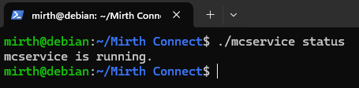
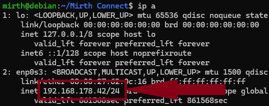
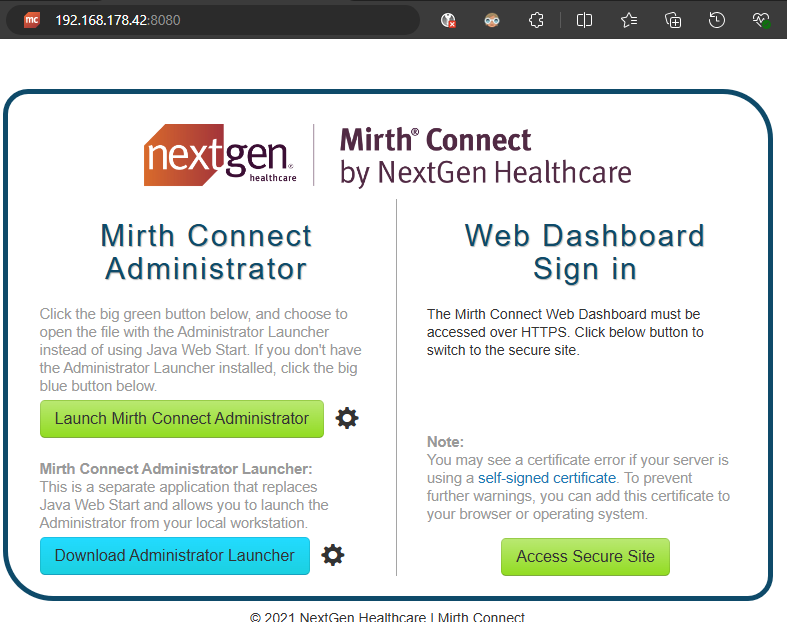

Install Mirth Connect (Step-by-step)
In einem Projekt im 7. Semester arbeiten wir mit dem Kommunikationsserver Mirth Connect. Diese Anleitung zeigt einen möglichen Installationsprozess für Linux in einer VM.
Voraussetzungen
Der Kommunikationsserver “Mirth® Connect by NextGen Healthcare” (kurz: Mirth) kann unter Linux, Windows oder iOS betrieben werden. Die offizielle Dokumentation von NextGen Healthcare zeigt den Installationsprozess mit Hilfe eines GUI oder CLI Installers.
In unserem späteren Projekt-Use-Case wird höchst wahrscheinlich Linux zum Einsatz kommen, sodass zunächst ein Linux System benötigt wird. Wir arbeiten hier mit einer virtuellen Maschine mit Debian. Für die virtuelle Maschine wird Virtual Box von Oracle verwendet. An dieser Stelle soll weder die Installation von Virtual Box noch von Linux in einer VM gezeigt werden. Dafür gibt es bereits diverse Ressourcen im Internet.
Um später auf Mirth und die VM zugreifen zu können, sollte bei (oder nach) dem Erstellen der VM die Netzwerkbrücke unter dem Netzwerkadaptern ausgewählt werden.

Optional sollte das Linux System SSH unterstützen oder beim Installationsprozess sollte SSH ebenfalls installiert werden. Eine Anleitung für SSH findet man beispielweise hier. Mit SSH kann man von einem anderen Rechner direkt auf dem Linux System arbeiten (per Kommandozeile). Es kann dafür einfacher sein, am Rechner mit Internetbowser zu arbeiten und (z.B. für MS Windows) via PowerShell auf das Linux System zuzugreifen. Das spart durchaus Arbeit zum “Abtippen” von URLs oder Code, den man stattdessen einfach Copy&Paste vom Internet Brwoser ins Terminal kopieren kann.

sudo apt install openssh-serverAnstatt einer Linux VM könnten Windows-User alternativ WSL (Windows Subsystem for Linux) nutzen. Wenn Debian / Linux installiert wurde, können wir uns um die Installation von Mirth kümmern.
Gleicht geht es los
Startet das Linux System und öffnet das Terminal. Alternativ kann man sich via SSH in die Linux VM über den normalen Rechner einloggen. In meinem Beispiel habe ich mich mit MS Windows PowerShell auf Debian eingeloggt.
ssh mirth@debian
Zunächst sollte das Linux System aktualisiert werden. Beim ersten Update muss man möglicherweise den eigenen User als Sudouser hinterlegn.
su
[enter root password]
sudo usermod -aG sudo [username]Die ausführliche Anleitung zeigt mehrere Varianten, um den User als Sudouser zu definieren.
Danach wird die Systemaktualisierung durchgeführt.
sudo apt update
sudo apt upgradeDas Systemupdate findet man in vielen Anleitungen und scheint sinnvoll, aber nicht zwingend nötig zu sein.
Mirth herunterladen
Die Installation soll hier möglichst nur im Terminal erfolgen. Für den Download kann unter anderem wget genutzt werden. Das Programm muss möglicherweise zunächst noch intstalliert werden.
sudo apt-get install wgetDanach wird die neuste *tar.gz Datei heruntergeladen und als mirthconnect.tar.gz im eigenen Home-Ordner gespeichert. Man kann den Download natürlich auch in einen anderen Ordner herunterladen.
wget -O mirthconnect.tar.gz https://s3.amazonaws.com/downloads.mirthcorp.com/connect/4.5.1.b332/mirthconnect-4.5.1.b332-unix.tar.gzDer Download startet, zeigt einen Fortschrittsbalken an und bestätigt den (hoffentlich) erfolgreichen Abschluss. Optional kann man manuell nachschauen, ob die Datei tatsächlich im Home-Verzeichnis angekommen ist.
ls
Damit ist der erste Schritt erledigt und die Installation von Mirth und Java kann folgen.
Mirth und Java installieren
Mirth benötigt Java, sodass dies zunächst installiert werden muss. Wie üblich, gibt es dafür mehrere Varianten, aber letztlich werden nur zwei Befehle benötigt.
sudo apt install default-jre
sudo apt install default-jdkDer Mirth-Download wird einfach entpackt, sodass ein weiterer Ordner Namens “Mirth Connect” erstellt wird. Dieser enthält bereit alle relevanten Dateien, die der Kommunikationsserver benötigt.
tar xf mirthconnect.tar.gz
cd Mirth\ Connect/
lsMirth muss nur noch gestartet werden.
./mcservice start
Der Status des Mirth Connect Service lässt sich einfach anzeigen.
./mcservice status
Innerhalb des gleichen Netzwerkes kann nun mittels eines Webbrowsers auf Mirth zugegriffen werden. Eurer lokaler Rechner muss ebenfalls Java installiert haben. Die IP-Adresse des Linux Systems lässt sich leicht herausfinden.
ip a
Die IP-Adresse wird zusammen mit dem Port 8080 (mit Doppelpunkt voneinander getrennt), in die Browser-Adresszeile eingegeben. Der Mirth Startbildschirm wird gezeigt und man kann den Mirth Connect Administrator starten.

Falls noch eine Firewall (ufw: Ubuntu Firewall) aktiv ist, muss der entsprechende Port möglicherwiese geöffnet werden. Man kann beispielweise Port 8080 öffnen mit dem Befehl sudo ufw allow 8080.
Der Weblaucher wird im Browser heruntergelden, installiert und gestartet. Gegebenfalls muss man die Installation auf dem lokalen Rechner bestätigen, wie man es von anderen Applikationen gewohnt ist. Je nach Netzwerk muss der Port 8843 noch freigegeben werden sudo ufw allow 8443.
Das Login-Fenster öffnet sich mit der bereits hinterlegten Serverdaten. Mit admin als Username und admin als Passwort kann man sich initial einloggen in Mirth Connect Administrator.

Die persönlichen Daten sowie ein neues Passwort wird im nächsten Schritt einmalig eingegeben. Danach ist Mirth Connect fertig installiert und bereit für mehr.

Es könnte sinnvoll sein, den Mirth Connect Ordner umzubenennen, weil Leerzeichen evtl. gewisse spätere Aspekte verkomplizieren. Im Terminal mit dem Befehl mv Mirth\ Connect/ mirthconnect ist die neue Ordnerbezeichnung leicht umgesetzt.
Referenzen
Viele weitere Informationen über Mirth findet man in der offiziellen Dokumentation von NextGen Healthcare oder vielen weiteren Seiten / Foren sowie Video-Tutorials.
Alternativen
Alternativ zu einer Linux Installation kann man Mirth connect auch in einem Docker-Container betreiben. Wie das funktioniert, wird im Mirth Project Forum gezeigt. Zudem lässt sich auf PostgreSQL und PG-Admin in einem Container betreiben. Wenn Ihr noch keine Erfahrung mit Docker habt, so gibt es viele Tutorials zu diesem Thema.